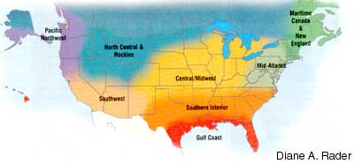

for where you live Edited by Carol Mack
New England/Maritime Canada
Early August is an optimal time to start fall crops of spinach, lettuce and other short-season greens. Prepare the garlic patch ahead of time by turning in compost and well-rotted manure. Azomite, a trace mineral supplement, has been key in helping to increase the size of my garlic heads. Spacing the plants from 10 to 12 inches apart helps, too. Mulch new ground with cardboard and cover that with straw, hay or grass clippings for neatness and to hold the cardboard down. By spring, the sod will be dead, the cardboard and mulch broken down, and the ground will be ready for tilling.
Mid-Atlantic
This is your last chance to put in those frost-sensitive plants such as beans, cucumbers and summer squash that mature in less than 60 days. Sow cool- weather crops like beets, carrots, radishes and hardy greens in two-week successions. After plants develop the third set of true leaves, try undersowing with white Dutch clover to suppress weeds, attract beneficial insects, fix nitrogen and live on as a winter/spring cover crop. Try plant-
ing perennial onions this fall - yellow potato onions yield heavily in this region. If you are saving your own garlic, pick medium to large heads that are tightly formed for replanting, and just enjoy eating the largest bulbs.
Southern Interior
Yes, it is steamy hot outside, but fall gardening in the Southern Interior is some of the best gardening of the year. In August, sow Brussels sprouts, which are best grown as a fall crop, as well as cabbage, broccoli, kohlrabi and carrots. Keep them well watered, and mulch them to conserve moisture and keep the soil cool. They tolerate a good deal of frost, which actually will improve their flavor. By September, the weather has cooled considerably - just in time for another round of planting. Mustard greens, easy to grow and very nutritious, can be sown in beds or rows. In Zone 8 or warmer, turnips can be grown from early fall into early spring. Beets and garden peas are also fine candidates to round out the garden.
Gulf Coast
Prune the best peppers and eggplants back a bit, and mulch, water and fertilize them to encourage a fall crop. The rest of the garden can be tilled several times, or solarized, to dry out the soil and reduce nematode populations. Solarization also requires tilling, but you want the soil to be moist before covering it with a layer of UV-resistant clear plastic; in six to eight weeks, most of the weeds and other pests will be reduced. Also, seed snow peas now and bush beans through early September. Be sure to keep them watered and covered with fabric row covers until the heat gives way to cooler temperatures.
Central/Midwest
Reaping the rewards of the season sometimes seems like an endless job! Try to pick produce in the morning after the heavy dew is gone and again in late afternoon. To spread out tasks such as making spaghetti sauce, freeze key ingredients now and make the sauce on a cool fall day. Extend the harvest season by plant-ing cool-weather varieties such as lettuce, peas and greens. Be vigilant in watching insect populations; squash bugs multiplied particularly rapidly last year and ate our winter squash crop!
North Central and Rockies
Late summer is fire season in much of our area, so preventative and protective measures are in order. Make sure your roofs are clean, and rake dry plant materials away from siding, fences and decks. Even city dwellers need to maintain a 30-foot fire-resistant landscape around buildings. Firebrands can be carried a half mile or more by winds accompanying forest fires and can easily ignite dry foundation plantings. Farther from the house, expect a certain amount of brown in the landscape - summer dormancy is nature’s way of surviving this droughty time of year. Mulches and drip irrigation will make every drop of water count in both landscape and garden. Sow hardy greens through August. And remember to take a shaker of garlic-basil salt with you to the tomato patch - the big pay-off for all that work is a juicy bite of just-picked, sun-warmed, vine-ripened tomato with just a touch of the salt.
Pacific Northwest
There’s a sense of joy and satisfaction as we get caught up in the flurry of late summer harvest. If you have more than you can use, contribute to your local food pantry. Start transplants or direct sow cold-hardy onions such as ‘Walla Walla Sweets’ by early August, but wait until late September to plant garlic. September conditions are excellent for planting and transplanting perennial herbs. For salad treats this fall and next spring, plant successions of cold-hardy European greens (corn salad/mache, chicories, kale) and Asia mustards and Joi Choi. Fall beets should be in the ground by early August.
Southwest
Enjoy the Southwest chile season, stringing red chiles into ristras, and roasting and freezing green chiles for next winter’s stews. Keep sowing fall greens, including spinach, kale and lettuce through August at higher elevations and September at lower levels. Sow fava beans in September in areas where winter temperatures don’t drop below 20 degrees - they will make a tasty spring treat. Clean up and compost crops that are finished or that get hit by frost. Then, plant the ground to fall cover crops. Winter rye or winter triticale mixed with vetch or peas work well at both high and low elevations. Mulch perennials with straw or bark chips in colder regions to increase winter hardiness. Share extra produce with neighbors, schools or a shelter.
|
 |
|
|